Sail Rock
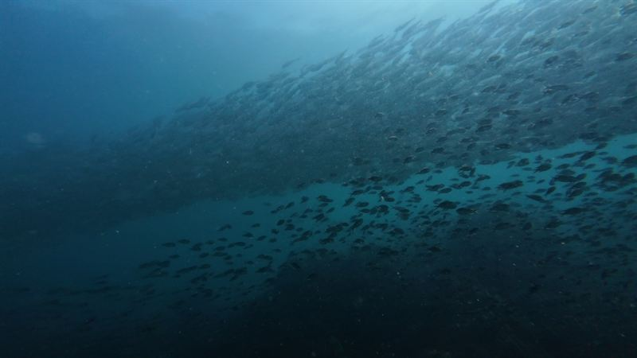
Bigeye trevally (Caranx sexfasciatus)
The "jacks" of Sail Rock. Hundreds hang together in the blue off the walls, and sometimes swirl into a tornado around divers.
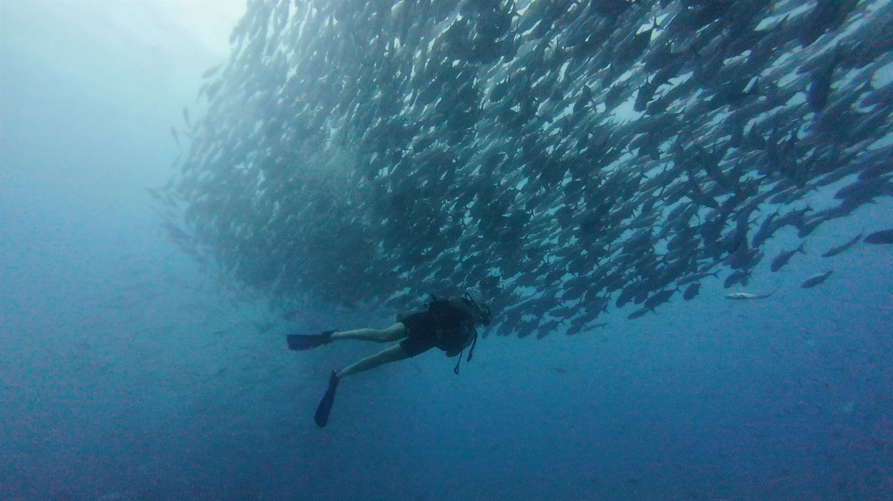
Home / Dive sites / Marine life
What you can meet diving Sail Rock and Koh Ma, from schools of hundreds of jacks to nudibranchs smaller than your thumb. Every photo on this page was taken on our own dives.
In the blue
Sail Rock stands alone in open water, so the fish of the open sea gather around it in numbers you rarely see elsewhere.

The "jacks" of Sail Rock. Hundreds hang together in the blue off the walls, and sometimes swirl into a tornado around divers.

Silver and torpedo-shaped, usually in big, slow schools right beside the rock. They look fierce but ignore divers completely.
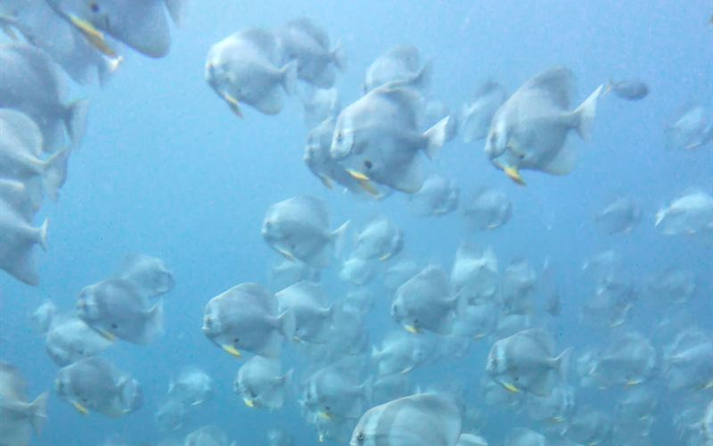
Tall, flat and curious. They often drift in close to have a look at divers, especially while you hang at the safety stop.
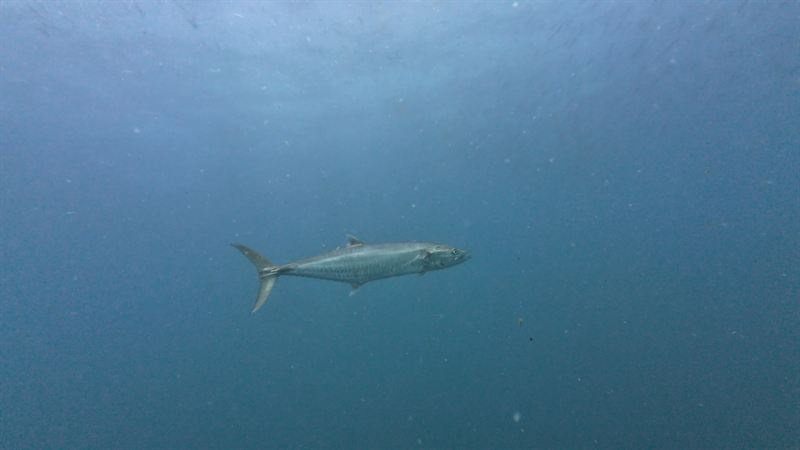
A fast open-water hunter that cuts through the schools at speed. You usually see one pass, not stay.
On the reef
Look closely at the walls, the coral and every crack: the smaller life is where most of the colour is.
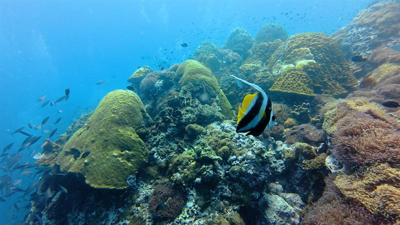
Black and white stripes with a long white fin trailing behind, often in pairs over the coral.
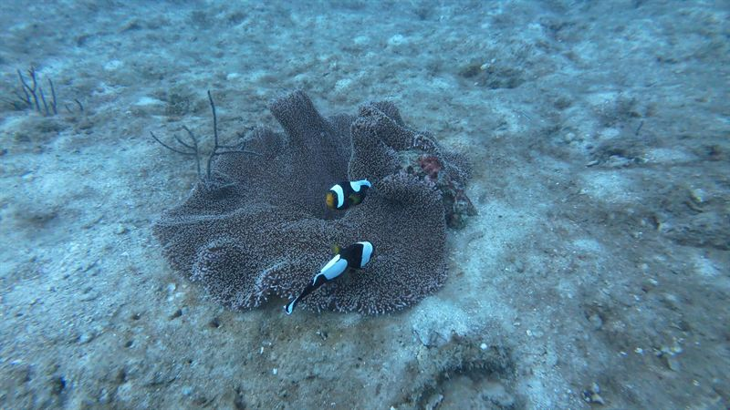
Living in their anemone and defending it fiercely — even against divers a hundred times their size.
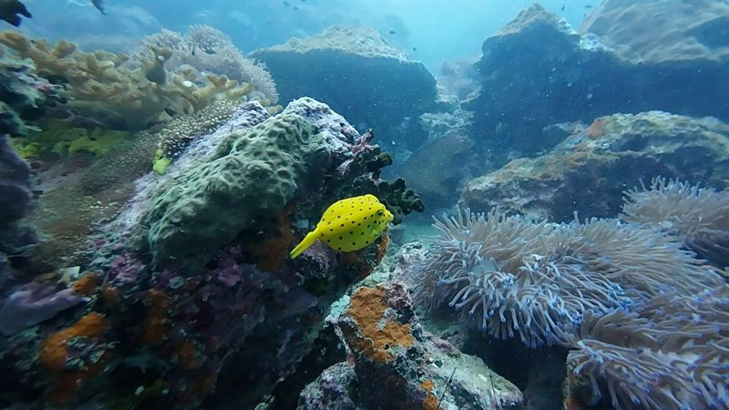
Young ones are bright yellow with black spots and swim like tiny dice. Adults turn duller with age.
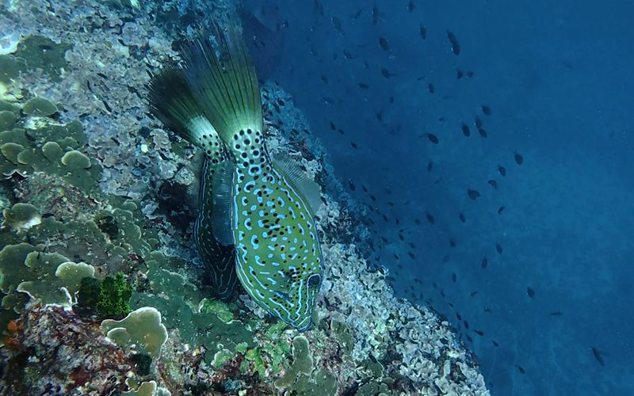
Covered in blue scribbles and spots, with rough, file-like skin. It hangs by the wall and turns to keep watching you.
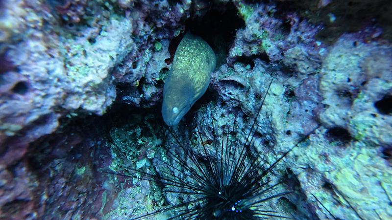
Heads poking out of the rock, opening and closing their mouths to breathe. No threat — as long as your hands stay out of holes.
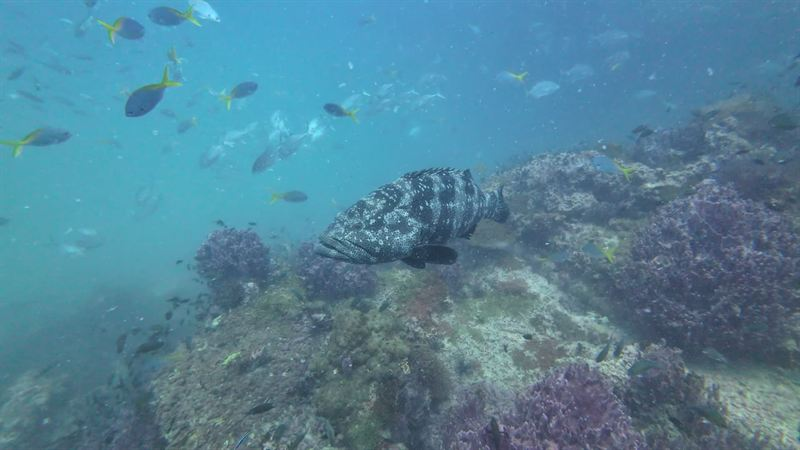
A big, heavy-bodied grouper that patrols the reef slowly and often lets divers come quite close.
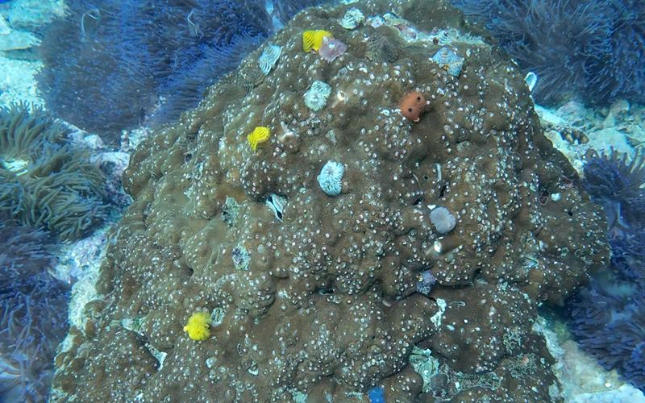
Tiny coloured spirals dotted over the coral that vanish into their tubes the moment you get close.
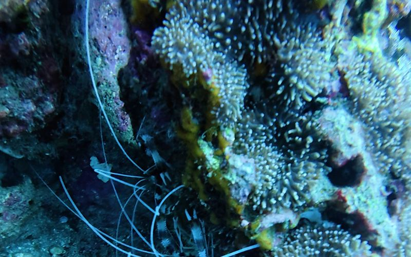
Red-and-white striped with long white antennae, often upside down under a ledge waiting to clean fish.
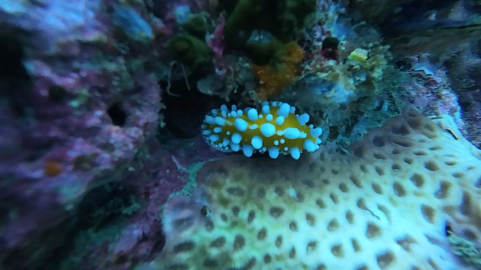
Sea slugs in impossible colours. Small and slow: the reward for divers with good buoyancy and patience.
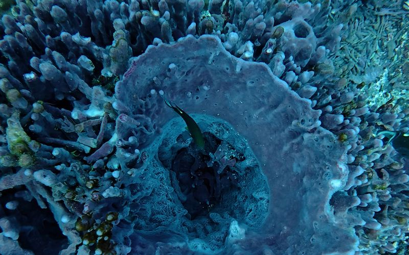
Giant sponges that filter huge amounts of water every day, and often shelter a fish or two inside.
On the sand
The sandy patches look empty until something moves. Slow down and let your eyes adjust.
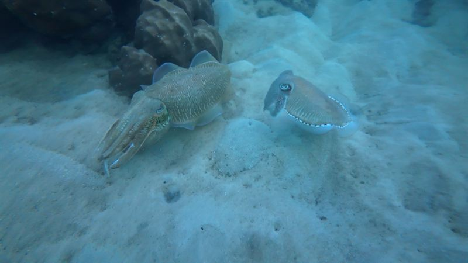
Masters of colour change that hover over the sand and change their skin while you watch. Often seen in pairs.
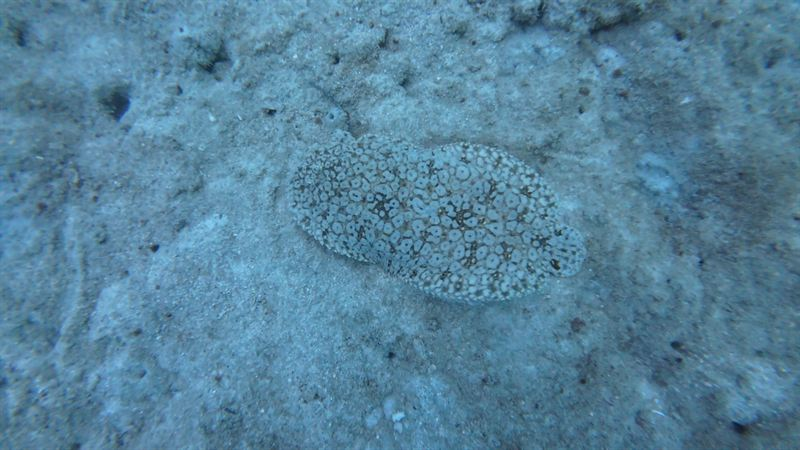
A flat fish with both eyes on one side of its head, almost invisible on the sand until it moves.
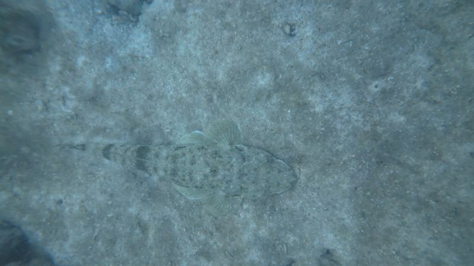
Long, flat and camouflaged, waiting for small fish to come too close. Look for the eyes.
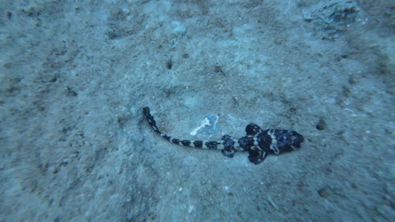
Also called zebra shark: the young, like this one, are striped and the adults spotted. Calm and harmless, usually resting on the bottom.
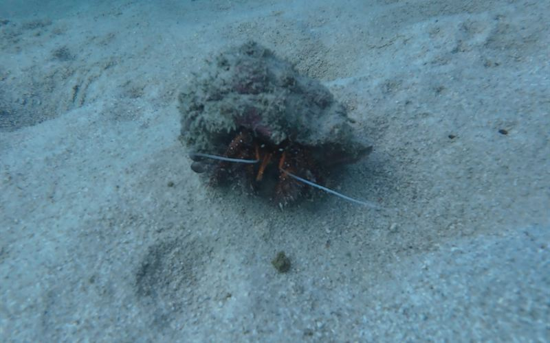
Carries a borrowed shell on its back and moves house as it grows.
Big visitors and hazards
The one everyone hopes to see, and the two everyone should recognise before putting a hand down.

The biggest fish in the sea visits Sail Rock to feed on plankton, most often from April to June.

Perfectly camouflaged, with venomous spines. Never put a hand or knee down without looking.
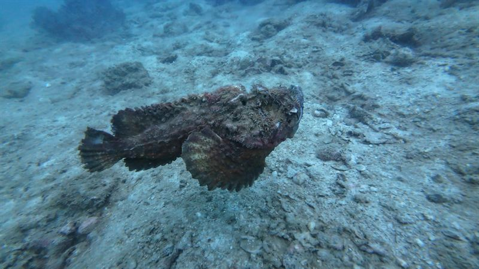
Looks exactly like a lumpy rock, and has the most venomous spines of any fish. Watch where you put your hands and knees.
Questions
Mostly big schools: bigeye trevally, barracuda and batfish around the pinnacle, with hunters like Spanish mackerel passing through. On the walls there are morays, filefish, Christmas tree worms and nudibranchs, and from time to time a whale shark.
A shallow hard-coral garden with green turtles, clownfish in their anemones, boxfish and bannerfish, and cuttlefish and soles on the sand around the reef.
Yes, but nothing to worry about. The ones divers meet are whale sharks, which feed on plankton, and leopard sharks, which rest calmly on the sand. Both are harmless to people.
Very little, as long as you do not touch anything. Scorpionfish and stonefish have venomous spines, sea urchins and fire coral sting, and box jellyfish can appear near the surface. Our health and safety page explains what to do.
Every trip includes underwater video of your dive, and we are happy to point out the small things for your own camera — but please, no touching and no flash on the animals.
Tell us what you would most like to see, and we will tell you which site and which time of year gives you the best chance.
See also the Sail Rock diving guide and all our dive sites.